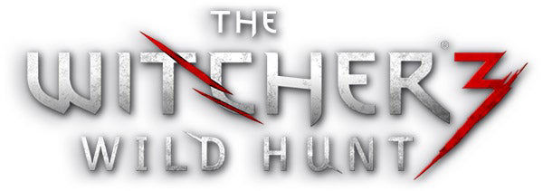
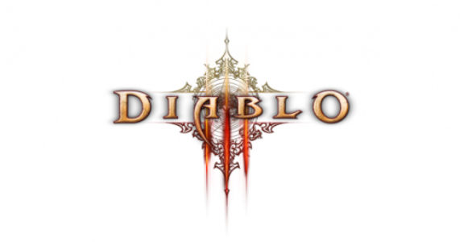
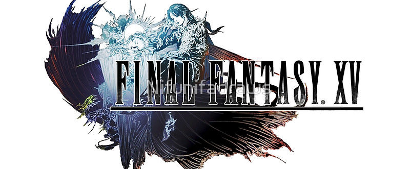

The Witcher III: Wild Hunt – 93% positive

Ragequit.gr’s Review:
A monumental achievement of staggeringly aching beauty, the Witcher III stands proudly as the greatest video game of all time, regardless of genre. Geralt's final, epic ride, is the high water-mark by which all future games will be judged and found lacking. Indeed, it's only disadvantage is that it completely ruins every other title on the market right now by nailing every single aspect of game design with almost supernatural clarity and perfection. If you play one video game in your life, make sure it's this one.
DarkZero’s Review:
The Witcher 3: Wild Hunt is more than just an incredible game that successfully brings lush visuals, tactical combat and a captivating world untainted with the issues that games of similar nature have when building such huge open spaces. It is also a respectful closure for Geralt, the series and its fans.
GRYOnline.pl’s Review:
Witcher 3 is an excellent game with tons of strong points that shine over all minor issues. The PC version is extremely pretty, works great and has room for some interesting alterations in terms of the visual side. The content is, of course, great and extremely diverse: The Wild Hunt is pretty much several games merged into one. Some quests are so long and interesting that they could become a separate game! It's a true gem and it's hard to think what will happen when the developers introduce the REDKit.
Diablo III – 88% positive

Polygon’s Review:
Games this thoughtfully crafted don't happen very often, and the care that Blizzard has taken with Diablo 3 shows in every facet of its design and execution. It might not be perfect, but after 45 hours, I'm not sure where it missteps, and after 45 hours, I feel like I've only scratched the surface of what it has to offer. Diablo 3 is almost evil in how high a bar it's set for every PC action RPG to follow, and I wouldn't be surprised to see that bar remain for a very long time.
Gameblog.fr’s Review:
Blizzard had to compromise to manage the expectations of a larger audience. Diablo III still manages to remain truthful to its roots, while still increasing accessibility for newcomers. Some players might be annoyed by those revisions of the formula, but the truth is that Diablo III still is the benchmark of modern hack'n slash games we were praying to get, thanks to incredible production values, polish, sound work and content.
Eurogamer Portugal’s Review:
It is true that Blizzard is not a company known for being innovative, but there is a word which I believe defines their games: competence. Diablo is the best of its genre and is there to last for several years.
Final Fantasy XV – 85% positive

Gameblog.fr’s Review:
Final Fantasy XV Windows Edition is the most complete and the most beautiful version of the loveable but imperfect RPG. If you own a good PC and are interested in Noctis' adventures, you can jump right in without any fear, just be sure its messy combat system, generic quests and quite strange scenario won't bother you.
Wccftech’s Review:
Final Fantasy XV Windows Edition is the only, true definitive edition of the Square Enix Japanese Role-Playing Game, thanks to the superior graphics quality and several gameplay and story enhancements, which are also included in the consoles' Royal Edition.
Impulsegamer’s Review:
Unlike many of its siblings, Final Fantasy XV is not really about empires or kings. It isn’t about magic or monsters—or even really about people. Final Fantasy XV is about four friends, the bond they share, and the power that such friendships have to improve the world.